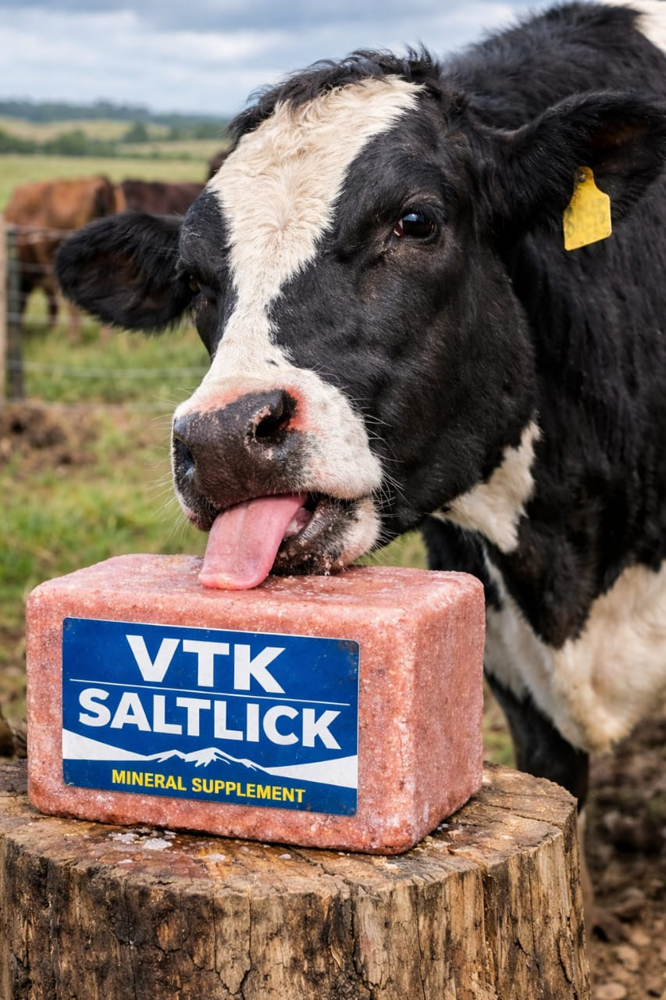

VTK Saltlick is specially formulated to support the daily nutritional needs of your cows, sheep, and goats. It helps improve digestion, strengthen bones, boost immunity, and increase overall productivity for healthier, more active animals. Suitable for all stages of growth, VTK Saltlick ensures your livestock get the essential minerals they need for consistent performance and better yield.

Balanced nutrients designed for livestock health.
VTK is a forward-thinking agricultural brand focused on improving livestock health and maximizing farm productivity through high-quality nutritional solutions. We understand the daily challenges farmers face and we are committed to providing reliable products that deliver measurable results.
Our flagship product, VTK Saltlick, is carefully developed with essential minerals that promote stronger bones, better digestion, improved immunity, and consistent growth across all livestock.
At VTK, we believe that healthier animals lead to higher productivity and greater profitability for farmers.
Perfect for cattle, goats, and sheep across all growth stages.
Strengthens resistance and improves overall vitality.
Enhances productivity, weight gain, and farm output.